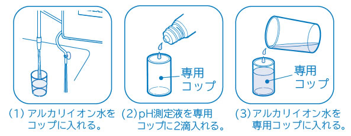

Here is a summary of the answers to frequently asked questions from our customers.

If the product does not recover even after taking the above measures, there is a possibility of a malfunction. Please contact the store where you purchased the product or our customer service center without repairing it yourself. If you do not use the product for a long period of time, wash it, give it an impression, and then store it in a place with low humidity.